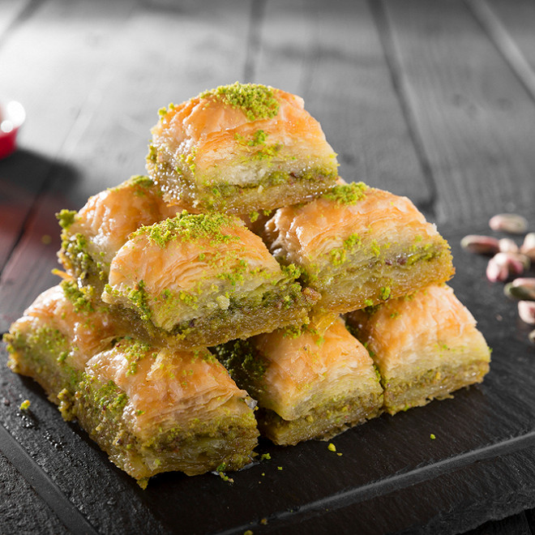

Baklava

Deliciously Delectable Baklava
I grew up near a volcano and it was both dangerous and exhilarating.
I would often spend my afternoons as a little boy with my grandmother,
who I endearingly call ‘Bak’. Whenever the volcano would spit up and
start to flow I would shout and point ‘Bak, lava!’
Prep time: 1.5 hours
Total time: 1.5 hours plus 1 hour chilling in the fridge
Cook time: 45 minutes
Yield: makes 40 portions
Ingredients
Syrup mixture
- 2 cups granulated sugar
- 2 cups honey
- 2 cups waters
- 1 cinnamon stick
- 2 lemons sliced into thick rounds (discard the ends)
Body
- Filo pastry
- 6-7 cups crushed walnuts
- 1 tsp cinnamon
- 2 tbsp granulated sugard
- 750g butter
Steps
- Start by making the syrup mixture. Mix the sugar with the honey and
the water in a pot and bring to a simmer over a hob. You basically
want everything to dissolve nicely (you’re not trying to cook anything
here).
- Once everything is dissolved, turn off the heat and put the pot aside.
Put the cinnamon stick and lemon slices in the pot, and then put the
lid on the pot.
- Let the pot cool to room temperature (during this time it is steeping
like tea).
- In another pot place 500g of butter and melt it over low heat.
- Next move on to the base. Grab a 1 x 1/1 80mm pan and baste the bottom
and sides generously with the melted butter.
- Place in your first layer of filo pastry (you will need to cut the filo
at each layer to fit).
- Repeat this process 6 times (i.e baste the first layer of filo pastry
generously! with butter and then put the second layer down and repeat).
You will have a total of 6 layers of filo pastry.
- Take your walnuts, 1 tsp of cinnamon and 2 tbsp of sugar. Mix these
ingredients together in a bowl.
- Butter your 6th layer of filo and put down a third of your walnut mixture.
Spread the mixture out evenly.
- Place a layer of filo pastry directly on top of the nuts (no need for
butter here).
- Repeat two more times with butter until you have a total of 3 filo pastry
layers.
- Butter the third layer and spread down another ⅓ of your walnut mixture.
- Place down another three filo pastry layers with butter.
- Spread out the last of your walnut mixture.
- Now here you are going to do 6 final layers of filo pastry like you did
at the beginning. Your equation should be like this: 6 layers + nuts +
3 layers + nuts + 3 layers + nuts + 6 layers = correct.
- Brush the last layer of filo pastry liberally with butter like you have
done so many times now.
- Place this baklava pan in the fridge to set for 1 hour so that you can cut it.
- Just before the baklava is set, preheat the oven to 180 degrees celsius
(or 150 on our oven).
- Pull the baklava tray out of the fridge and cut the baklava into 40 portions.
Work quickly. It should be 5 wide by 8 long. As long as the butter is cold
and set it should be relatively easy to cut.
- Put the tray directly in the oven and bake for 45 minutes or until nice and browned.
- When finished pull the tray from the oven and immediately pour the syrup
mixture (without the lemons or cinnamon stick) all over the baklava and in
all the cracks. It will sizzle delightfully.
- Let the baklava now cool to room temperature before serving. It will soak up
all the juices that you poured in (it might seem like a lot of liquid at
first when you first add the syrup mixture).
- The baklava should last nicely for 5 days covered out of the fridge.
- Serve on top of yaourt chantilly with some crushed walnuts.